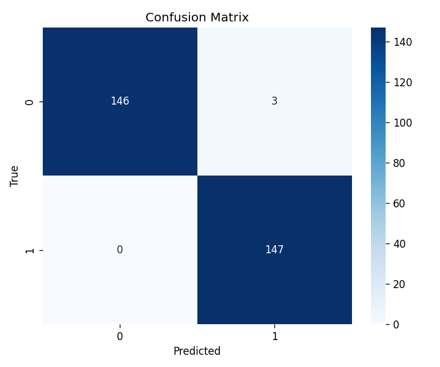

Generated 2026-04-26 11:51
| Movement | ch0_IEMG | ch0_MAV | ch0_logMAV | ch0_MAVS | ch0_SSI | ch0_RMS | ch0_logRMS | ch0_VO3 | ch0_LogDet | ch0_WL | ch0_ZCR | ch0_SSC | ch0_logVAR | ch0_Skew | ch0_Kurt | ch0_TKEO | ch0_HjAct | ch0_HjMob | ch0_HjCmp | ch0_MNF |
|---|---|---|---|---|---|---|---|---|---|---|---|---|---|---|---|---|---|---|---|---|
| 0 | 57340.2461 +/- 56035.8125 | 143.3507 +/- 140.0896 | 4.2499 +/- 1.3717 | -0.5178 +/- 131.8538 | 36371452.0000 +/- 57428168.0000 | 215.5018 +/- 210.9208 | 4.6052 +/- 1.4465 | 282.1621 +/- 278.7105 | 74.0812 +/- 77.4345 | 30114.0254 +/- 25806.8457 | 0.2476 +/- 0.0977 | 169.3947 +/- 47.6533 | 9.2128 +/- 2.8930 | 0.2348 +/- 0.4738 | 2.8891 +/- 3.5913 | 39075.1094 +/- 59377.7695 | 91143.7266 +/- 143912.3125 | 0.7295 +/- 0.2851 | 1.6779 +/- 0.2586 | 108.7906 +/- 46.6222 |
| 1 | 311274.0312 +/- 236478.6875 | 778.1860 +/- 591.1971 | 6.2892 +/- 0.9581 | -1.8314 +/- 719.8947 | 701041280.0000 +/- 800450368.0000 | 1101.2776 +/- 734.7042 | 6.6786 +/- 0.9232 | 1365.3611 +/- 834.5213 | 414.4843 +/- 389.9852 | 132109.1250 +/- 87779.8203 | 0.1553 +/- 0.0297 | 127.8959 +/- 19.5800 | 13.3595 +/- 1.8464 | 0.1254 +/- 0.4210 | 2.9042 +/- 3.5435 | 713172.6250 +/- 783977.6875 | 1756784.6250 +/- 2005985.5000 | 0.4914 +/- 0.0801 | 1.8703 +/- 0.1876 | 69.9547 +/- 11.9503 |
| Subject | Accuracy |
|---|---|
| Subject ? | 96.96% |

None.